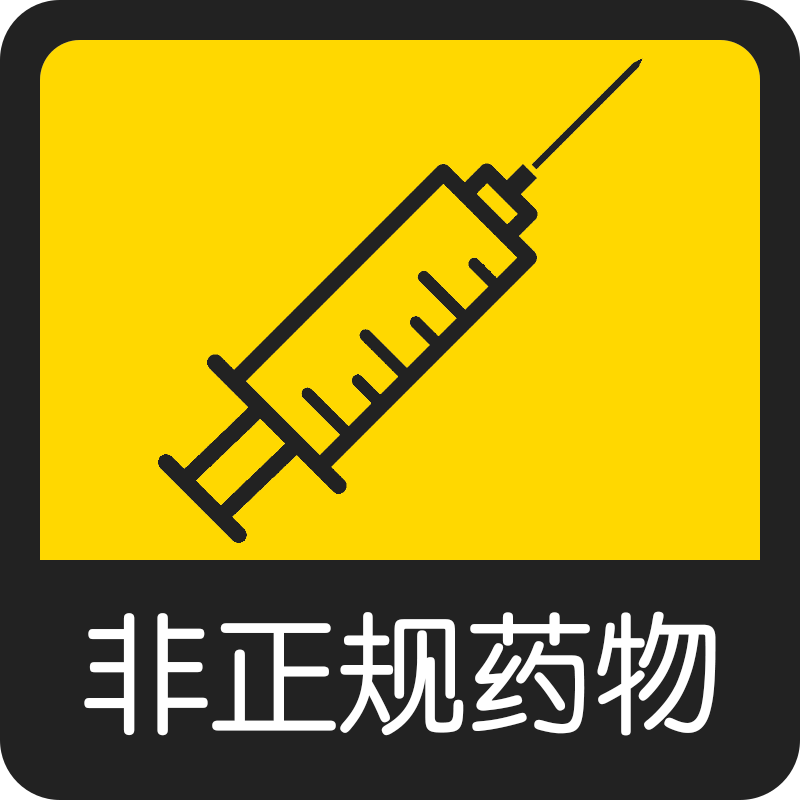
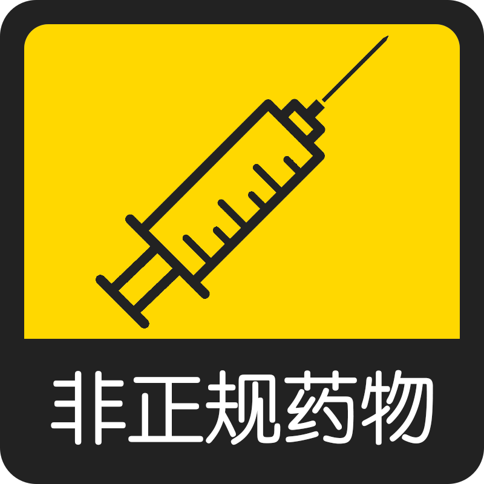

社区
主义
用药
解放

 



从本质上讲，Transvalues是一个非正规的、图一乐的测验，测验会用来对给定的八个不同的跨性别价值观分配百分比。
这些问题通常是为跨性别准备的，但是熟悉跨性别的顺性别应该也可以作答。
每个答案都会轻微影响分数。当测验结束时，您的答案将与每个值的最大可能值进行比较，从而为您匹配一个结果。
本测验总共题。
本测验是8Values的分支，原发布地址
Transvalues汉化版对原测验进行了符合中文语境的翻译，尽可能保留原意地对测验中出现的英语梗进行了本土化适配。
Transvalues是一个发布于2021年的测验，测验内容带有原作者的个人主义，本汉化版仅作翻译，不对选项得分进行修改。
原发布地址
推特用户：即推友。
匿名频道：例如某TG频道。
跨医学主义：认为是否为跨性别取决于经历性别焦虑或接受跨性别医疗。
自我身份认同：与跨医学主义相反，即任何认为自己是跨性别的人都是跨性别。
非正规药物：指无需正规用药处方就可以在网上买到的激素药物，通常缺少安全保障。
正规医疗：认为非正规药物是危险的，且处方药不应该在药店轻易买到，而是需要经过精神科医生评估后才能被给予。
顺性别规训：鼓励跨性别假扮成异性，融入顺性别社会，以此来对抗恐跨行为。
跨性别游行：跨性别如果想要摆脱压迫，就得采取激进的行动。